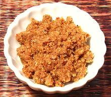

 |
Mussamun Curry PasteThailand - Krueng Gaeng Mussamun | ||||
| Makes: Effort: Sched: DoAhead: |
10 oz *** 1-1/4 hrs Total |
The most time consuming of Thai curry pastes, but made fairly dry, and with the amount of salt given, it keeps for months in the fridge. This recipe makes enough for about 6 dinners for four | |||
| This curry paste is a Thai interpretation of the highly aromatic Mughal cuisine of Hyderabad in India (Mussamun (variously spelled) = Muslim). Unlike the Mughal cuisine of northern India, Hycerabad adopted coconut and tamarind, making it more compatible with Thailand. | |||||
|
|
2 2 1 1 1 1 1/2 1 1/3 1-1/2 3 4 1/2 1 1 |
t T t t t t t t c T oz c T T |
Cumin Seeds Coriander Seeds Peppercorns, black Cloves Cinnamon Mace Nutmeg Cardamom seeds. Thai Chili dried (1) Galangal, fresh Lemon Grass (2) Shallots Garlic Shrimp Paste (3) Salt |
This recipe is traditionally made by pounding in a big stone mortar, but I find a mini-prep food processor helps cut down on pounding time. See Note-4 for details. If you don't have the Big Stone Mortar (so why don't you?) you'll have to settle for a somewhat more grainy paste.
|